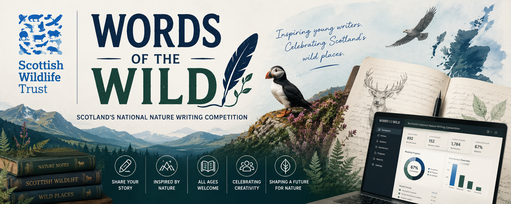
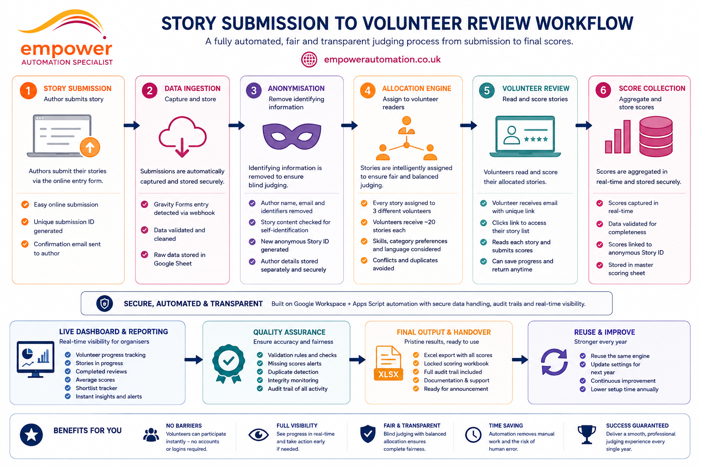
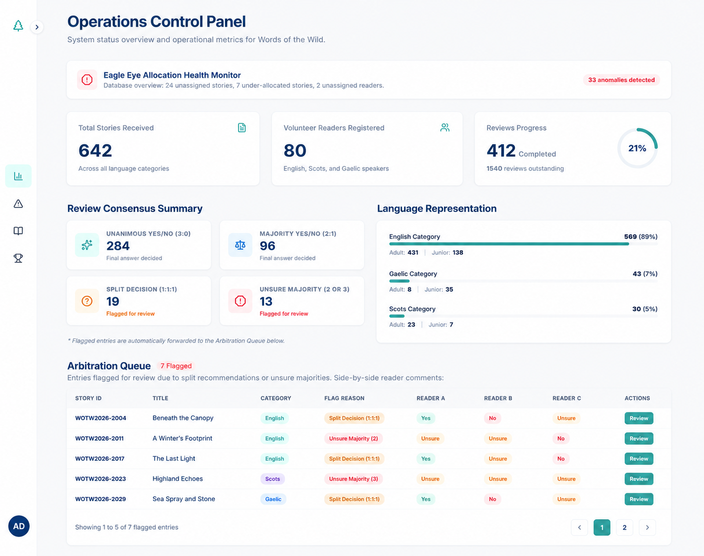
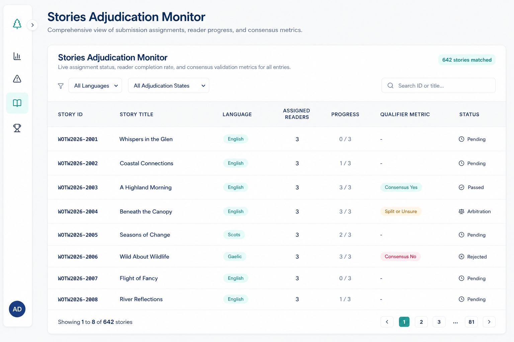
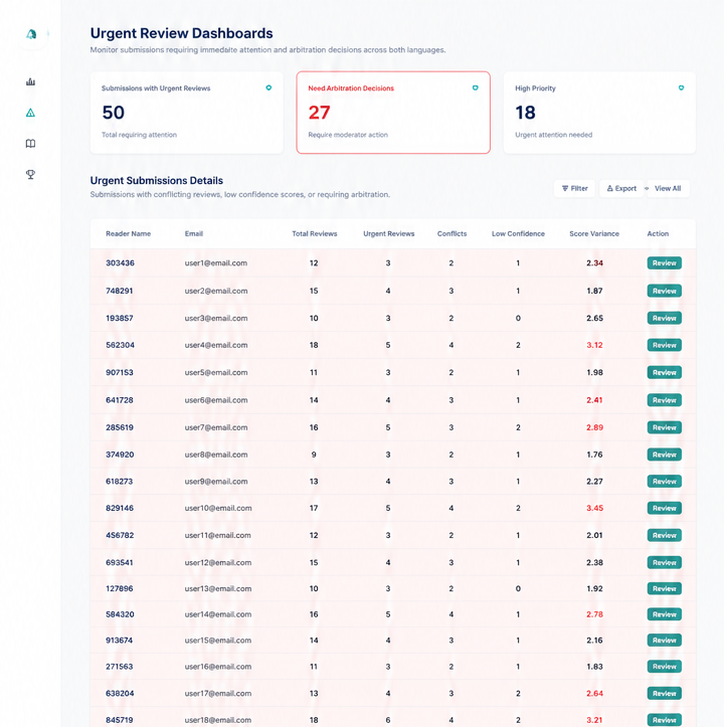
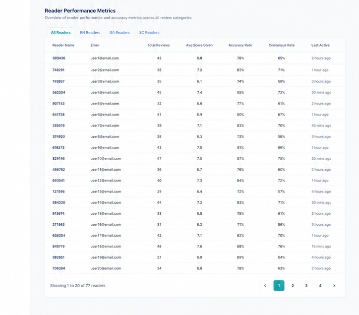
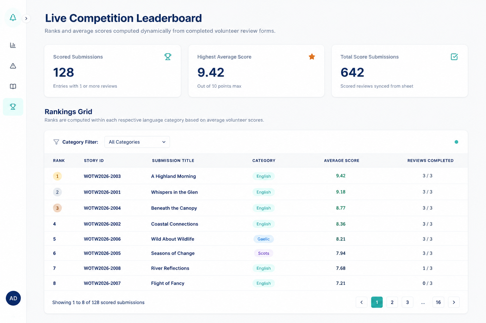

Public engineering case study
A secure operations platform for a national nature writing competition.
Built for the Scottish Wildlife Trust to manage multilingual story submissions, volunteer reader allocation, scoring, arbitration and final competition rankings.

Privacy note:
All interface images shown on this site use generated representative
demonstration data. No live submission content, volunteer details,
credentials or private operational records are displayed.
The operational challenge
Replacing a complex manual process with one connected system.
The competition required hundreds of anonymous submissions to be distributed across a large volunteer reading team, with every story reviewed independently and routed correctly across English, Scots and Gaelic.
Anonymous processing
Submission data is transformed into anonymous PDFs and reader materials without exposing entrant details.
Language-aware allocation
The allocation engine prioritises Scots and Gaelic capability before distributing English-language entries.
Automated reconciliation
Prefilled review links connect every response to the correct reader, story and assignment automatically.
System architecture
Google Workspace automation with a secure Next.js control layer.
Google Apps Script manages the background workflow, while the server-side dashboard gives authorised administrators a clear, responsive operational interface.

Submission intake
Gravity Forms sends new entries into the operational Google Sheets database through a webhook-driven workflow.
Automation engine
Apps Script creates anonymous PDFs, allocates readers, assembles packs and sends personalised reviewer emails.
Review reconciliation
Prefilled Google Forms preserve assignment identifiers and reconcile each response with the correct story.
Operations dashboard
A secure Next.js application provides live progress, adjudication, allocation and competition insights.
Next.js
TypeScript
Google Apps Script
Google Sheets API
Microsoft Entra ID
Tailwind CSS
Architecture walkthrough
See the complete system in action.
This walkthrough explains the engineering decisions behind the Words of the Wild platform, from submission processing and multilingual allocation through to automation, security, volunteer workflows and the operational dashboard.
Technical overview
A guided tour of the complete architecture.
Generated from the documented workflow and source code, this walkthrough follows an entry from the moment it's submitted through the complete operational process. It shows how personal information is seperated from the creative work to create anonymous PDFs and tracking identifiers are generated as well as the judging process. It also explains the round-robin allocation logic, multilingual reader matching, personalised reading lists, prefilled scoring forms and the automated consensus rules used to process completed evaluations.
Running time: 4 minutes 37 seconds
Visual product tour
Live operational oversight without opening the underlying database.
Each interface was designed to help staff understand the current state of the competition quickly, identify risk early and act without manually auditing hundreds of spreadsheet rows.
01 · Operations control panel
One place to understand the entire competition.
The main dashboard combines submission totals, completed reviews, language representation, consensus outcomes and the arbitration queue.
- Live progress indicators
- Consensus and review summaries
- Language distribution monitoring
- Arbitration cases requiring staff action

02 · Stories adjudication monitor
Story-level progress across hundreds of submissions.
Every anonymous submission can be searched, filtered and reviewed without exposing entrant information.
- Allocated-reader counts
- Completed review progress
- Exact Yes, No and Unsure ratios
- Language and adjudication filters
- Pagination designed for 650+ entries

03 · Eagle Eye allocation health
A proactive integrity check for the operational database.
Eagle Eye identifies allocation problems before they become competition delays.
- Unassigned stories
- Under-allocated stories
- Readers with no assignments
- Collapsible anomaly details
- Early warning of operational gaps

04 · Reader review matrix
Performance, alignment and review activity at a glance.
Anonymous reader identifiers allow staff to monitor completion, average scoring and consensus alignment without displaying public volunteer information.
- Completed review totals
- Average score analysis
- Consensus alignment
- Recent reviewer activity
- Strict, balanced and lenient calibration

05 · Competition leaderboard
Live rankings generated from completed score forms.
Rankings are calculated within the correct competition category and language stream.
- Anonymous Story IDs
- Average scores
- Completed review counts
- Language-specific filtering
- Current ranking position

Enterprise security model
Protected at identity, domain and data-access level.
The public-facing case study contains no production source code or private operational data. The live system applies layered access controls before any dashboard content is rendered.
Microsoft Entra ID
Authentication is restricted to the Scottish Wildlife Trust's dedicated Microsoft tenant.
Corporate domain validation
A second server-side check ensures only authorised organisational email addresses are accepted.
Server-side data access
Operational data is retrieved securely without exposing database credentials to the browser.
Data minimisation
Story and reader workflows use anonymous identifiers wherever personal details are not operationally required.
Impact and outcomes
From spreadsheet coordination to proactive competition operations.
Manual work reduced
Reader allocation, document generation, pack assembly and notification emails are handled automatically.
Volunteer experience improved
Prefilled review links removed the need to search through a dropdown containing more than 1,000 story titles.
Earlier intervention
Staff can identify inactive readers, stalled stories and allocation gaps while the reading period is still active.
Transparent adjudication
Every story can be followed from assignment through vote ratio, consensus decision and arbitration.
Engineering principle
Client-owned infrastructure, not unnecessary SaaS dependency.
The system was designed around tools already present within the client's operational environment. Google Workspace handles the automation and data workflow, while the bespoke dashboard provides the specialist interface the competition required.
Source-code review
Why the hybrid architecture was the right fit.
On review of the documented workflow and Google Apps Script implementation assessing the architectural approach, its strongest design decisions and the realistic alternatives available to the Scottish Wildlife Trust.
Layered security
Microsoft Entra ID restricts the staff dashboard to the Trust's tenant, while Google Workspace data is accessed through server-side credentials that are never exposed to the browser.
Low-friction volunteering
Volunteers do not need to register for another platform or learn a new portal. Personalised reading documents, anonymous PDFs and prefilled review forms keep the process simple while preserving reliable assignment tracking.
Minimal recurring cost
The workflow uses the Trust's existing Google Workspace environment for data processing, document generation and email, avoiding unnecessary annual software subscriptions.
Resilient automation
Dynamic header mapping, controlled batch processing and execution timers help the Apps Script workflow remain dependable despite spreadsheet changes and Google's six-minute runtime limit.
Alternative approaches
Other architectures were possible, but each introduced a larger trade-off.
The review considered three realistic alternatives to the chosen hybrid Google Workspace and Next.js architecture.
Fully custom web application
A bespoke platform built with Next.js, Node.js and PostgreSQL could have managed submissions, reader allocation, document access, scoring and administration inside one unified application.
Advantages
Database operations would not be restricted by Apps Script execution limits or Google Workspace quotas. Reading and scoring could also have been combined into one polished volunteer interface, with more advanced reporting and complete control over the user experience.
Trade-offs
This would have required substantially more development, testing and maintenance costs. The Trust would also need ongoing database hosting, application support and account management for approximately 150 volunteer readers. We didn't have enough time from inital contact to their due date. The cost would have been x5 higher plus ongoing support fees.
Commercial submissions platform
Specialist products such as Submittable, Zealous or Judgify provide ready-made systems for creative submissions, blind judging, reviewer access and competition scoring.
Advantages
These platforms could have been introduced quickly without building a custom system from the ground up. They already include reviewer accounts, scoring tools, administrative controls and vendor-managed hosting.
Trade-offs
The Trust would be committed to recurring licence costs and a less flexible workflow. Specialist requirements such as Scots and Gaelic routing, the competition's reader-allocation rules, consensus checking and arbitration process may have been difficult to reproduce accurately.
No-code database and automation stack
Airtable could have been used as the relational database, Softr as the volunteer portal, and Make or Zapier to connect submissions, assignments, emails and review responses.
Advantages
This approach could have produced a visual database and volunteer interface relatively quickly, with less custom code and many common integrations already available.
Trade-offs
With hundreds of submissions and multiple reviews required for every story, the workflow would generate thousands of automation operations. Usage limits, higher subscription tiers, record limits and per-user pricing could make the platform increasingly expensive and dependent on several third-party services.
Review conclusion
A practical architectural sweet spot.
The chosen hybrid design provides the strongest practical balance for the Scottish Wildlife Trust: a secure and bespoke operational platform with a simple volunteer experience, minimal recurring costs and enough flexibility to support the competition's specialist judging workflow. Google Apps Script performs the high-volume processing within the Trust's existing Workspace environment, while Next.js gives authorised staff a polished control layer for monitoring progress, resolving exceptions and managing the competition.
Explore the engineering case study